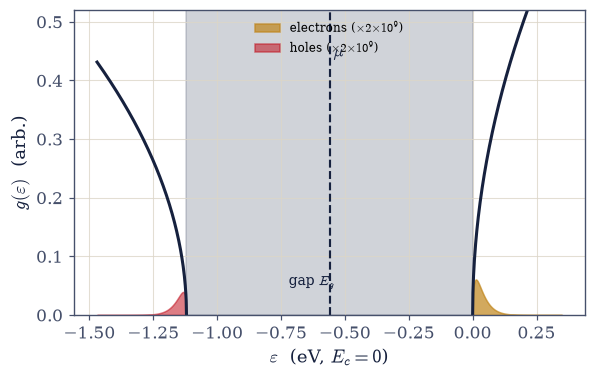
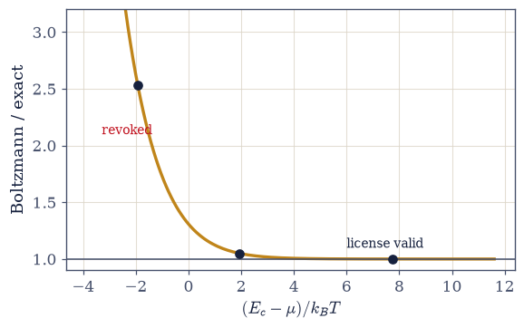
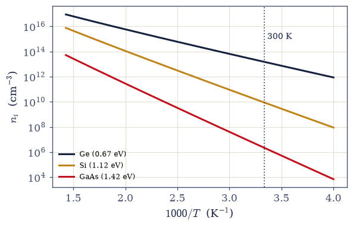
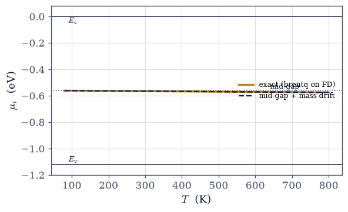
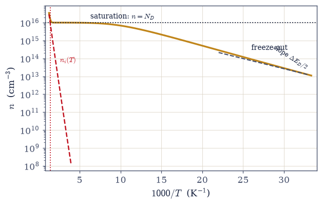
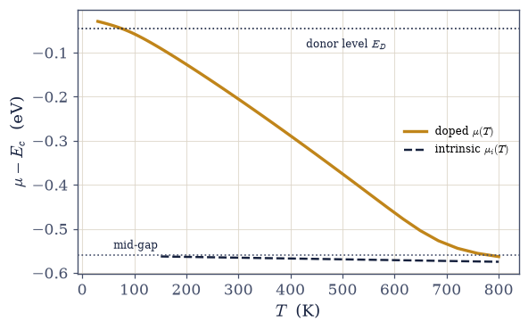
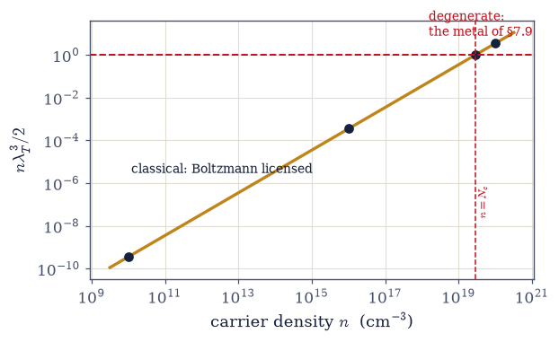

7.13 Semiconductors: Fermi–Dirac in a Gap#
Notebook overview#
§7.12 ended with a promise: set the chemical potential loose in the gap and let Fermi–Dirac do the rest. This notebook keeps that promise with conspicuous economy, because every tool in it is second-hand. The distribution is the Fermi function of §7.7, unchanged; the carrier integrals are the \(F_{1/2}\) machinery of §7.3 pointed at a new density of states; the criterion that decides when they collapse to Boltzmann form is verbatim the \(n\lambda_T^3 \ll 2\) of §7.8; and the one genuinely new object, a density of states with a gap in it, was built, gated, and handed over by §7.12. The statistics resumes here, finishes Movement III, and an entire technology falls out of the resumption.
The model is two parabolic bands: conduction states above \(E_c\) with density-of-states mass \(m_c\), valence states below \(E_v\) with \(m_v\), separated by the gap \(E_g\) (silicon: 1.12 eV; the masses are the band curvatures of §7.12, taken here as stated inputs the way a DFT calculation would supply them). Electrons in the conduction band are counted by \(n_F\); holes, the negative-mass band-top carriers of §7.12 now made statistical, are counted by \(1 - n_F\) in the valence band: two dilute gases, one Fermi function. In the Boltzmann limit the engineer’s workhorse constant appears, \(N_c = 2(m_c k_BT/2\pi\hbar^2)^{3/2}\), and turns out to be literally \(2/\lambda_T^3\) — the thermal wavelength of §7.8 wearing overalls — with the nondegeneracy license quantified against the exact integrals (ratio 1.000 at \(E_c - \mu = 200\) meV, 1.05 at 50 meV, 2.5 inside the band). Multiplying the two populations cancels \(\mu\) and yields the law of mass action \(np = n_i^2\): however doping tilts the populations, their product is fixed by gap and temperature alone. The data jewel follows — \(n_i(\text{Si}, 300\,\text{K}) = 8.9\times10^9\ \text{cm}^{-3}\) from \(\hbar\), one gap, and two masses, within 10% of the accepted value; a Ge/GaAs table spanning seven decades from gaps that differ by a factor of two; one carrier pair per \(5.6\times10^{12}\) silicon atoms.
The centerpiece is doping. Donor statistics and exact charge neutrality (solved by
scipy.optimize.brentq at every temperature) produce the classic Arrhenius portrait with its
three regimes: freeze-out, the saturation plateau (\(n \approx N_D\) across 100–450 K, the reason electronics works at all: carrier density set by chemistry rather than temperature),
and the intrinsic takeover, with device death computed at 719 K for \(N_D = 10^{16}\). The
mass-action seesaw meanwhile crushes the minority holes to \(7.9\times10^3\ \text{cm}^{-3}\),
twelve decades below the majority. Then the license is revoked on schedule: pushed toward
\(N_c = 2.8\times10^{19}\ \text{cm}^{-3}\) the carriers go degenerate, \(\mu\) enters the band,
and the heavily doped semiconductor is the metal of §7.9, and Movement III closes its loop on the
same dimensionless number that opened it. A stretch computes the most famous number in hobby
electronics: \(V_{bi} = (k_BT/q)\ln(N_AN_D/n_i^2) = 0.720\) V, the silicon diode drop, from one
logarithm of mass action, with the junction’s mechanics deferred outward, per the volume’s
contract.
Conventions (this notebook). Energies in eV, densities in cm⁻³, \(E_c = 0\) as the energy reference (so \(E_v = -E_g\) and everything in the gap is negative); \(k_BT = 0.02585\) eV at 300 K. Unit discipline is the numerical trap here (a silently mixed eV/J or cm⁻³/m⁻³ shifts \(n_i\) by ten orders of magnitude), so every Joule↔eV and m⁻³↔cm⁻³ conversion happens inside exactly two Setup helpers (
N_eff,lambda_T) and nowhere else. The exact carrier integrals usescipy.integrate.quadon the \(F_{1/2}\) form with the substitution \(x = (\varepsilon - E_c)/k_BT\) and a stated cutoff (insensitivity shown once); every neutrality condition (intrinsic, doped, and the takeover temperature) is solved byscipy.optimize.brentqwith its bracket stated. Band parameters carry their sources.How to read the checks. Each exercise closes with a
validatecall against an independent fact: the hole integral against a brute-force second route; the \(N_c = 2/ \lambda_T^3\) identity at \(10^{-10}\); the silicon number against the accepted range (cited, not tuned); the intrinsic \(\mu\) formula against the exact solve to all displayed digits; the three-regime portrait against its landmark values; the degenerate ladder against the criterion of §7.8; the diode drop against the number every hobbyist knows. A ✓ is strong evidence; a ✗ is a prompt to locate the discrepancy.Scope (the framing constraint, binding). Nothing new happens here, and the visible prose says so: this is quantum statistical mechanics consuming the object of §7.12, not device physics. The p–n junction’s mechanics (depletion, rectification, the transistor) are named and deferred (Sze & Ng, Physics of Semiconductor Devices); real gaps and masses from electronic structure belong to DFT and the MMM course; the Saha equation is named as this notebook’s mathematics in a stellar atmosphere. See Ashcroft & Mermin (Ch. 28); Kittel (Ch. 8). Cross-reference §7.7 (the function, unchanged), §7.3 (the integrals), §7.8 (the license, twice decisive), §7.9 (the degenerate return), §7.12 (the object consumed), §6.20 (Pauli underneath it all), and forward to §7.14 (the photon gas opens Movement IV).
Theory in brief#
Two bands, two species#
Near its extrema, the band structure of §7.12 is parabolic: conduction states with curvature mass \(m_c\) above \(E_c\), valence states with \(m_v\) below \(E_v\), and no states at all in the gap \(E_g = E_c - E_v\). Each band therefore carries a √-edge density of states, and the Fermi function of §7.7 counts both species at once:
The hole bookkeeping is the filled-band argument of §7.12 made statistical: a full valence band is
inert, so only its empty states, with weight \(1 - n_F\), respond, and each responds as a positive
carrier of mass \(|m_v|\). Exact evaluation goes through the substitution of §7.3
\(x = (\varepsilon - E_c)/k_BT\), which turns each integral into the Fermi–Dirac form
\(F_{1/2}(\eta) = \int_0^\infty \sqrt{x}\,dx/(1 + e^{x-\eta})\), evaluated by
scipy.integrate.quad with a stated cutoff.
The Boltzmann limit, and an old friend in overalls#
When \(E_c - \mu \gg k_BT\) the Fermi tail is exponential and the integral collapses:
and likewise \(p \to N_v e^{-(\mu - E_v)/k_BT}\). The identity on the right deserves a pause: the “effective density of states,” the workhorse constant of every device textbook, is identically \(2/\lambda_T^3\) — the thermal wavelength of §7.8 for the carrier mass, spin included (verified below: \(2.816\times10^{19}\ \text{cm}^{-3}\) by both routes). Nondegeneracy for carriers is therefore verbatim the criterion of §7.8 \(n\lambda_T^3 \ll 2\), i.e. \(n \ll N_c\) — the movement’s opening map ruling its closing notebook. The license is precise and its revocation is scheduled: quantified against the exact integrals, Boltzmann/exact = 1.000 at \(E_c - \mu = 200\) meV, 1.050 at 50 meV, and 2.5 once \(\mu\) sits 50 meV inside the band.
The law of mass action#
Multiply the two Boltzmann populations and watch \(\mu\) cancel:
The product is independent of \(\mu\), and therefore of doping: however the populations are tilted, their product is fixed by the gap and the temperature alone. The structure is a chemical equilibrium constant for the reaction \(\varnothing \rightleftharpoons e^- + h^+\), and the same mathematics, applied to \(\text{H} \rightleftharpoons p + e^-\) in a stellar atmosphere, is the Saha ionization equation: one breath, outward.
The silicon number, and seven decades#
Setting \(n = p\) turns mass action into the intrinsic density in one square root, and differentiating its logarithm with respect to the gap measures the exponential’s leverage:
For silicon (\(E_g = 1.12\) eV, \(m_c = 1.08\), \(m_v = 0.81\)) this gives \(8.9\times10^9\ \text{cm}^{-3}\) at 300 K against the accepted \(9.65\times10^9\) (modern) to \(1.45\times10^{10}\) (older texts): within 10% from \(\hbar\), one gap, and two masses, the residual honestly assigned to the effective-mass inputs rather than tuned away. The same three constants give germanium (\(0.67\) eV) \(1.5\times10^{13}\) and GaAs (\(1.42\) eV) \(2.2\times10^6\): seven decades of carrier density from gaps within a factor of two, because the sensitivity is exponential, the field’s defining fact. And the scale: one carrier pair per \(5.6\times10^{12}\) silicon atoms, a part-per-trillion impurity of pure thermodynamics.
The chemical potential of an insulator#
Intrinsic neutrality \(n = p\), solved exactly by brentq on the Fermi–Dirac integrals, sits at
mid-gap plus a mass drift (the heavier band offers more states; \(\mu\) leans away from it) — and the Boltzmann-level formula matches the exact solve to all displayed digits (\(-0.56558\) eV at 300 K). Pause on the scandal §7.7 normalized: the chemical potential of an insulator lives where there are no states at all. That is routine for the formalism (\(\mu\) is the bookkeeping price of one more particle, the lineage of §7.4, not the address of any occupied level) and offensive only to the intuition that expects \(\mu\) to live on a state.
Doping: the three regimes#
Donors (phosphorus in silicon) park an electron \(\Delta E_D = 45\) meV below \(E_c\); the level ionizes per the degeneracy-2 donor statistics, and neutrality picks \(\mu\):
The classic Arrhenius portrait has three acts (\(N_D = 10^{16}\)): freeze-out below \(\sim\)80 K (carriers recaptured by their donors, \(n\) collapsing with slope \(\Delta E_D/2\)); the saturation plateau from \(\sim\)100–450 K, where \(n \approx N_D\) — read it slowly: for three hundred kelvin the carrier density is set by chemistry, not temperature, and this plateau is the operating premise of all electronics; and the intrinsic takeover as \(n_i(T)\) storms past \(N_D\): device death at 719 K, and the reason power electronics reaches for wide gaps (SiC, GaN: one breath, outward). Meanwhile the mass-action seesaw does its quiet work: doping to \(10^{16}\) crushes the minority holes to \(n_i^2/N_D = 7.9\times10^3\ \text{cm}^{-3}\), twelve decades down, the leverage on which bipolar devices run.
The license revoked: the degenerate return#
The Boltzmann license was granted by the criterion of §7.8, so it must be audited by the same number; in this notebook’s variables the degeneracy parameter is simply \(n/N_c\), marched here up the doping ladder:
At \(n \sim N_c\) Boltzmann fails (the ratios of Eq. 755 now bite), \(\mu\) crosses into the conduction band, and the heavily doped semiconductor is a metal in every respect the movement owns: a Fermi level in a band, a degenerate gas, the formulas of §7.9. Industry uses exactly this limit daily (degenerate emitters, ohmic contacts). Movement III ends where it began: the dimensionless number of the map of §7.8 adjudicates its last notebook.
The 0.7 volts (stretch)#
Join an n-type and a p-type region in equilibrium and one chemical potential must span both (the equilibrium condition of §7.4 and §5.9), so the bands bend by the difference of the bulk chemical potentials:
the ~0.7 volts every silicon diode drops, computed from one logarithm of mass action. The junction’s mechanics, depletion widths and rectification and the transistor, belong to device physics (Sze & Ng) and are deferred outward, per the framing constraint: this course computes the number and stops.
Setup#
Data and instruments only: the series colours, the CODATA constants, the band-parameter
tables for silicon, germanium and GaAs (gaps and density-of-states masses, sourced), the
donor depth and its degeneracy, the two unit-conversion helpers the conventions above
name — N_eff and lambda_T — the Fermi–Dirac quadrature of
§7.3, and the Boltzmann-limit transcription that Exercise 2
derives. The objects this notebook is about are not here: the exact carrier integrals
are built in Exercise 1, the intrinsic neutrality solve in Exercise 3, the doped
neutrality and takeover solves in Exercise 5, and the built-in potential in Exercise 7.
The Setup below holds this notebook’s data and instruments — nothing you are asked to build. It is collapsed so the building stays yours; expand it whenever you want the details.
k_BT at 300 K = 0.02585 eV (the 0.02585 of the conventions)
N_c(Si, 300 K) = 2.816e+19 cm^-3, N_v = 1.829e+19 cm^-3
Exercise 1 — Two bands, two species#
The gapped DOS of §7.12 meets the Fermi function of §7.7 — electrons above, holes below, one distribution. Cite Eq. 754.
Derive the carrier integrals \(n = \int g_c\,n_F\) and \(p = \int g_v(1 - n_F)\), with the hole bookkeeping taken from the filled-band-minus-occupations argument of §7.12.
Write
n_electrons(mu, T, mat)andp_holes(mu, T, mat): the same two integrals in the \(x = (\varepsilon - E_c)/k_BT\) form of §7.3, each of them \(N(T)\,(2/\sqrt{\pi})\,F_{1/2}(\eta)\) with the Setup’sfermi_halfdoing the quadrature and the Setup’sN_effcarrying the units — electrons at \(\eta = (\mu - E_c)/k_BT\), holes at the mirrored \(\eta_p = (E_v - \mu)/k_BT\). Write these yourself — the implementation is the lesson.Certify them: show the \(F_{1/2}\) cutoff is a non-issue by doubling it, and check the hole route against a brute-force integral in raw \(\varepsilon\) with no substitution.
Plot the band diagram: \(g(\varepsilon)\) with the gap, \(\mu\), and the two shaded carrier populations at 300 K.
State the framing contract (prose, the course’s voice): every tool in this notebook is second-hand (the function of §7.7, the integrals of §7.3, the license of §7.8), aimed at the object of §7.12; the statistics resumes here and finishes the movement.
cutoff insensitivity: |n(120) − n(60)|/n = 0.0e+00
holes, mirrored F_1/2 route: 7.156713e+09 cm^-3
holes, brute-force ε route: 7.156713e+09 cm^-3
electrons at the same μ: 1.101848e+10 cm^-3

Fig. 674 Two bands, two species, one Fermi function. The gapped density of states silicon presents to the statistics (dark curves: \(g_c \propto \sqrt{\varepsilon - E_c}\) above the gap with mass \(m_c = 1.08\), \(g_v \propto \sqrt{E_v - \varepsilon}\) below with \(m_v = 0.81\); gap \(E_g = 1.12\) eV shaded), the chemical potential \(\mu\) stranded mid-gap (dashed — Exercise 4’s scandal), and the two carrier populations at 300 K: electrons weighted \(n_F\) (amber, above), holes weighted \(1 - n_F\) (red, below). The populations are drawn magnified \(\times 2\times10^{9}\) — to scale they would be invisible, and that invisibility is the physics: at \(\mu - E_c \approx -22\,k_BT\) the occupations are \(\sim e^{-22}\), which is why ten billion carriers per cubic centimetre counts as a triumph. Eq. 754.#
Validation 1#
✓ the F_1/2 cutoff is a non-issue: doubling x_cut moves n at the 1e-10 level or below [relative shift 0.0e+00]
✓ the hole bookkeeping survives a second route: brute-force ε-integral vs the mirrored F_1/2 [got 7.15671e+09 vs expected 7.15671e+09 (rtol=1e-08, atol=1e-09)]
✓ two carrier gases from one Fermi function, both evaluating stably at mid-gap μ [n = 1.10e+10, p = 7.16e+09 cm^-3]
True
Exercise 2 — The engineer’s constant is the thermal wavelength#
The Boltzmann limit, its workhorse \(N_c\), and the license quantified. Cite Eq. 755.
Derive \(n \to N_c e^{-(E_c-\mu)/k_BT}\) with \(N_c = 2(m_ck_BT/2\pi\hbar^2)^{3/2}\), and prove the identity \(N_c = 2/\lambda_T^3\) (the wavelength of §7.8 for the carrier mass).
Verify the identity numerically to machine precision (\(2.816\times10^{19}\) cm⁻³ by both routes, via
N_effand vialambda_T) and evaluate \(N_v\).Quantify the license against exact Fermi–Dirac: the ratio of the Setup’s
n_boltzmannto then_electronsyou wrote in Exercise 1, at \(E_c - \mu = 200, 50, -50\) meV — plot it against \((E_c - \mu)/k_BT\).Read it (prose): nondegeneracy for carriers is verbatim \(n\lambda^3 \ll 2\) — the movement’s opening map ruling its closing notebook; the revocation at \(n \sim N_c\) is Exercise 6’s business.
N_c via (m kT/2πħ^2)^3/2: 2.816486e+19 cm^-3
N_c via 2/λ_T^3: 2.816486e+19 cm^-3
N_v (m_v = 0.81): 1.829e+19 cm^-3
E_c − μ = 200 meV: Boltzmann/exact = 1.000
E_c − μ = 50 meV: Boltzmann/exact = 1.050
E_c − μ = -50 meV: Boltzmann/exact = 2.536

Fig. 675 The nondegeneracy license, quantified. The ratio of the Boltzmann carrier density \(N_ce^{-(E_c-\mu)/k_BT}\) to the exact Fermi–Dirac integral, against the reduced distance \((E_c - \mu)/k_BT\) of the chemical potential below the band edge. Deep in the tail the ratio is 1.000 to the tenth digit (\(E_c - \mu = 200\) meV \(\approx 7.7\,k_BT\), first marker); at 50 meV (\(\approx 2\,k_BT\)) Boltzmann already overcounts by 5%; and with \(\mu\) 50 meV inside the band the overcount is 2.5\(\times\) — Pauli refuses the double occupancy the classical form assumes. The license \(n \ll N_c\) is verbatim the \(n\lambda_T^3 \ll 2\) of §7.8 (Eq. 755), and its revocation at \(n \sim N_c\) is Exercise 6’s degenerate return.#
Validation 2#
✓ N_c is 2/λ^3: the thermal wavelength in industrial dress, by two code routes [got 2.81649e+19 vs expected 2.81649e+19 (rtol=1e-10, atol=1e-09)]
✓ the license quantified: exact in the tail, 5% at 2 k_BT, 2.5× wrong inside the band [max|Δ| = 0.00428562 (rtol=0.02, atol=1e-09)]
True
Exercise 3 — The law of mass action, and the silicon number#
One line makes \(np\) immune to doping; three constants make it \(10^{10}\). Cite Eq. 756, Eq. 757.
Derive \(np = N_cN_v e^{-E_g/k_BT} = n_i^2\) and state why \(\mu\) cancels, hence doping-independence; note the equilibrium-constant structure (Saha named, one breath).
Build the exact machinery the rest of the notebook runs on. Write
mu_intrinsic(T, mat), which solves intrinsic neutrality \(n(\mu) = p(\mu)\) for \(\mu\) withscipy.optimize.brentqon the Exercise 1 integrals, bracketed by the gap itself \([E_v, E_c]\) (holes dominate at the lower edge, electrons at the upper, and \(n - p\) is monotone in \(\mu\), so the root is unique); andn_intrinsic(T, mat), the electron density evaluated at that \(\mu\) — the exact route, so that no closed form and no Boltzmann step is smuggled into anything downstream. Write these yourself — the implementation is the lesson.Compute \(n_i(\text{Si}, 300\,\text{K})\) with them and compare with the accepted range (\(9.65\times10^9\) modern to \(1.45\times10^{10}\) in older texts, cited): within 10%, the residual honestly assigned to the effective-mass inputs, not tuned away.
Build the table: Ge and GaAs by the same three constants: seven decades from a factor-two gap spread; verify the sensitivity \(d\ln n_i/dE_g = -1/2k_BT\) numerically from the exact solve at shifted gaps.
Weigh the scales (prose): one pair per \(5.6\times10^{12}\) silicon atoms, a part-per-trillion impurity of pure thermodynamics, and the substrate of the information age; exponential gap-sensitivity stated as the field’s defining fact.
n_i(Si, 300 K), exact machinery: 8.880e+09 cm^-3
n_i(Si, 300 K), closed form: 8.880e+09 cm^-3
accepted: 9.65e9 (modern) … 1.45e10 (older texts) — ours within 10% of the modern value
the mass-action table at 300 K (same three constants per material):
Si E_g = 1.12 eV: n_i = 8.88e+09 cm^-3
Ge E_g = 0.67 eV: n_i = 1.51e+13 cm^-3
GaAs E_g = 1.42 eV: n_i = 2.22e+06 cm^-3
Ge / GaAs span: 6.8 decades from a gap ratio of 2.1
d ln n_i/dE_g = -19.341 eV^-1 (−1/2k_BT = -19.341)
→ a factor of 10 per 119 meV of gap
one carrier pair per 5.6e+12 silicon atoms

Fig. 676 Seven decades from a factor of two. Intrinsic carrier density \(n_i(T)\) for germanium (\(E_g = 0.67\) eV), silicon (1.12 eV), and GaAs (1.42 eV), computed from the exact neutrality solve at each temperature and plotted against \(1000/T\) — the Arrhenius axis on which mass action (Eq. 756) draws near-straight lines of slope \(-E_g/2k_B\). At 300 K (dotted) the three materials read \(1.5\times10^{13}\), \(8.9\times10^{9}\), and \(2.2\times10^{6}\) cm\(^{-3}\): gaps within a factor of two, carrier densities spanning seven decades, because the sensitivity is \(e^{-E_g/2k_BT}\) — a factor of ten per 119 meV. The slight curvature is the \(T^{3/2}\) prefactor of \(\sqrt{N_cN_v}\).#
Validation 3#
✓ the silicon number from ħ, one gap, two masses — cited against 9.65e9 accepted, not tuned [got 8.8801e+09 vs expected 8.88e+09 (rtol=0.02, atol=1e-09)]
✓ the seven-decade table: Ge and GaAs from the same three constants each [max|Δ| = 1.27209e+11 (rtol=0.05, atol=1e-09)]
✓ the exponential lever, measured from the exact solve: d ln n_i/dE_g = −1/2k_BT [got -19.3409 vs expected -19.3409 (rtol=0.001, atol=1e-09)]
True
Exercise 4 — The chemical potential of an insulator#
\(\mu\) lives in the gap — where there are no states at all. Cite Eq. 758.
Evaluate \(\mu_i\) at 300 and 500 K with the
mu_intrinsicyou wrote in Exercise 3 — an exactbrentqsolve on the Fermi–Dirac integrals, with no Boltzmann step in it anywhere.Derive the Boltzmann-level formula \(\mu_i = (E_c + E_v)/2 + (3/4)k_BT\ln(m_v/m_c)\) and verify it matches the exact solve to all displayed digits.
Plot \(\mu_i(T)\) and attribute the drift’s sign (the heavier band wins states; \(\mu\) leans away from it).
Address the scandal (prose): a chemical potential in a stateless region is routine for the formalism of §7.7 and offensive to naive intuition; resolve it (\(\mu\) is the bookkeeping price of a particle, not an address), and note the lineage of §7.4.
T = 300 K: exact μ_i = -0.56558 eV formula = -0.56558 eV
T = 500 K: exact μ_i = -0.56930 eV formula = -0.56930 eV

Fig. 677 The chemical potential of an insulator lives where there are no states. Intrinsic \(\mu_i(T)\) for silicon from the exact brentq neutrality solve (amber) against the Boltzmann-level formula mid-gap \(+\, (3/4)k_BT\ln(m_v/m_c)\) of Eq. 758 (dashed dark — indistinguishable to all displayed digits: \(-0.56558\) eV at 300 K by both routes). The band edges frame the gap; \(\mu_i\) starts at mid-gap at \(T \to 0\) and drifts away from the heavier band (here \(m_c > m_v\), so downward) as temperature widens the thermal window — the heavier band hosts states more cheaply, and \(n = p\) makes \(\mu\) compensate. The whole trajectory sits in the stateless gap: \(\mu\) is a bookkeeping level (the \(\partial F/\partial N\) of §7.4), not an address.#
Validation 4#
✓ intrinsic μ: mid-gap plus the mass drift, matching the exact solve to all displayed digits [max|Δ| = 7.50904e-09 (rtol=0.0001, atol=1e-09)]
True
Exercise 5 — Doping: the three regimes#
Donor statistics, exact neutrality, and the temperature plateau on which every chip depends — the movement’s centerpiece. Cite Eq. 759.
Write
solve_neutrality(T, N_D, dE_D): \(n = p + N_D^+\) with \(N_D^+ = N_D/(1 + 2e^{(\mu - E_D)/k_BT})\), solved for \(\mu\) byscipy.optimize.brentqon your Exercise 1 integrals — the \(g = 2\) stated, and the bracket with its low-T guard stated. Write this one yourself — the implementation is the lesson.Sweep \(T = 30\)–800 K for \(N_D = 10^{16}\) (P:Si, \(\Delta E_D = 45\) meV) and reproduce the portrait: freeze-out, saturation across 100–450 K, intrinsic takeover; plot \(\log n\) vs \(1000/T\) with the regimes labelled and the freeze-out slope \(\sim\Delta E_D/2\) exhibited (fit \(\ln(n/T^{3/4})\) against \(1/T\) over 30–45 K).
Write
takeover_temperature(N_D): \(n_i(T) = N_D\) solved bybrentqin the logarithm on the bracket [400, 1200] K, with then_intrinsicof Exercise 3 supplying \(n_i(T)\) — the logarithm because \(n_i\) is exponentially steep and raw values would wreck brentq’s interpolation across the decades. Write this one yourself — the implementation is the lesson.Evaluate it for \(N_D = 10^{16}\): device death, with the wide-gap moral (SiC/GaN, one breath outward); plot \(\mu(T) - E_c\) sliding from the donor level toward mid-gap.
Work the seesaw (computation + prose): \(p = n_i^2/n\) at 300 K, twelve decades of minority suppression from one doping decision; verify mass action at the doped \(\mu\); read the plateau slowly.
T = 30 K: n = 1.11e+13 cm^-3 μ = -0.0292 eV p = 3.28e-166
T = 100 K: n = 6.82e+15 cm^-3 μ = -0.0575 eV p = 1.00e-35
T = 300 K: n = 9.96e+15 cm^-3 μ = -0.2054 eV p = 7.92e+03
T = 450 K: n = 9.99e+15 cm^-3 μ = -0.3317 eV p = 4.98e+10
T = 800 K: n = 3.47e+16 cm^-3 μ = -0.5632 eV p = 2.47e+16
freeze-out: fitted slope of ln(n/T^0.75) vs 1/T = -260.0 K
−ΔE_D/2k_B = -261.1 K (the /2 of the frozen regime)
intrinsic takeover: n_i(T) = N_D at T = 719 K — device death for N_D = 1e16
the seesaw at 300 K: n = 9.96e+15, p (exact) = 7.92e+03, n_i^2/n = 7.92e+03
minority suppression: 12.1 decades below the majority
mass action at doped μ: np/n_i^2 = 0.999875

Fig. 678 The three regimes of a doped semiconductor — the portrait every device rests on. Majority-carrier density \(n(T)\) for phosphorus-doped silicon (\(N_D = 10^{16}\) cm\(^{-3}\), \(\Delta E_D = 45\) meV) from the exact brentq neutrality solve of Eq. 759, on the Arrhenius axis. Right: freeze-out — carriers recaptured by their donors, collapsing with the frozen-regime slope \(\Delta E_D/2\) (guide line, dashed). Centre: the saturation plateau — \(n \approx N_D\) (dotted) from \(\sim\)100 to \(\sim\)450 K: for three hundred kelvin the carrier density is set by chemistry, not temperature, and this flat stretch is why electronics works. Left: the intrinsic takeover — \(n_i(T)\) (red, dashed) storms past \(N_D\) and thermodynamics retakes control at \(T = 719\) K: device death, and the reason hot power electronics reaches for wider gaps (SiC, GaN).#

Fig. 679 Where the ledger balances: the doped chemical potential \(\mu(T)\) for \(N_D = 10^{16}\) cm\(^{-3}\) (amber), sliding from just below the donor level \(E_D = E_c - 45\) meV at 30 K (freeze-out: the level half-occupied, \(\mu\) pinned near it) down through the gap as saturation liberates every donor, and joining the intrinsic \(\mu_i(T)\) (dashed dark) once the takeover makes the donors irrelevant (\(-0.563\) eV at 800 K, within 12 meV of intrinsic). The donor level and mid-gap are marked; the entire trajectory again lives in stateless territory. Reading this panel against the Arrhenius portrait above: each regime of \(n(T)\) is a chapter in \(\mu\)’s descent.#
Validation 5#
✓ the three regimes' landmarks: the plateau carrier density and device death [max|Δ| = 1.6499e+11 (rtol=0.02, atol=1e-09)]
✓ the plateau bracketed: 68% ionized at 100 K, fully saturated at 450 K [max|Δ| = 0.00190936 (rtol=0.05, atol=1e-09)]
✓ freeze-out at the frozen slope ΔE_D/2 (prefactor-corrected fit over 30–45 K) [got -259.997 vs expected -261.102 (rtol=0.05, atol=1e-09)]
✓ the seesaw: doping to 1e16 crushes minority holes twelve decades down [got 7916.42 vs expected 7900 (rtol=0.05, atol=1e-09)]
✓ and mass action holds at the doped μ: np = n_i^2, the potential genuinely cancelled [got 0.999875 vs expected 1 (rtol=0.001, atol=1e-09)]
True
Exercise 6 — The license revoked: the degenerate return#
The number of §7.8 climbs its ladder, Boltzmann fails on schedule, and the movement ends where it began. Cite Eq. 760.
Compute \(n\lambda_T^3/2 = n/N_c\) across the doping ladder \(10^{10} \to 10^{20}\) cm⁻³ (via
lambda_T, so the identity does the work) and mark the crossover \(n \sim N_c\).Solve \(\mu\) from exact neutrality at \(N_D = 10^{20}\) by
scipy.optimize.brentqon \(n(\mu) = p(\mu) + N_D\), with then_electronsandp_holesyou wrote in Exercise 1 (donors taken fully ionized; the stated guard: at this density the donor levels merge into the band and the two-state statistics no longer applies) and confirm \(\mu\) enters the conduction band.Show Boltzmann’s failure there quantitatively (Exercise 2’s ratio at the degenerate \(\mu\)) and hand the regime to the formulas of §7.9: compute \(\varepsilon_F - E_c\) for the carrier gas and its \(T_F\).
Close the loop (prose): the heavily doped semiconductor is a metal by every measure the movement owns — degenerate emitters and ohmic contacts named as industry’s daily use of exactly this limit; one dimensionless number opened Movement III and now closes it.
the degeneracy ladder at 300 K (nλ^3/2 = n/N_c):
n = 1.0e+10 cm^-3: nλ^3/2 = 3.55e-10
n = 1.0e+16 cm^-3: nλ^3/2 = 3.55e-04
n = 2.8e+19 cm^-3: nλ^3/2 = 9.94e-01 ← the crossover: n ~ N_c
n = 1.0e+20 cm^-3: nλ^3/2 = 3.55e+00
N_D = 1e20, full ionization: μ = +0.0638 eV = E_c + 0.0638 eV
→ μ sits 2.5 k_BT INSIDE the conduction band
Boltzmann/exact at this μ: 3.32 — the license is revoked
the formulas of §7.9 take over: ε_F − E_c = 0.0727 eV, T_F = 844 K > 300 K

Fig. 680 One doping dial drives silicon across the entire map of §7.8. The degeneracy parameter \(n\lambda_T^3/2 = n/N_c\) at 300 K against carrier density, from intrinsic (\(\sim 10^{10}\) cm\(^{-3}\): ten decades into the classical regime) through device doping (\(10^{16}\)) to degenerate contact doping (\(10^{20}\): past the boundary). The crossover \(n = N_c = 2.8\times10^{19}\) cm\(^{-3}\) (dashed) is where Boltzmann fails (Exercise 2’s ratio bites), \(\mu\) crosses into the band, and the material becomes the metal of §7.9 — \(T_F = 844\) K at \(10^{20}\), comfortably degenerate at room temperature. Eq. 760: the dimensionless number that opened Movement III adjudicates its close.#
Validation 6#
✓ the ladder verbatim: ten decades of classical headroom spent by one doping dial [max|Δ| = 0.0494768 (rtol=0.05, atol=1e-09)]
✓ μ crosses into the conduction band at degenerate doping [μ − E_c = +0.0638 eV]
✓ and Boltzmann fails there while T_F > T: the degenerate return to the metal of §7.9 [Boltzmann/exact = 3.32, T_F = 844 K]
True
Exercise 7 — The 0.7 volts#
One chemical potential, two doped regions, and the most famous number in hobby electronics. Cite Eq. 761.
State the equilibrium condition: joined materials share one \(\mu\) (the §7.4/§5.9 lineage), so the bands must bend by the difference of the two bulk chemical potentials.
Derive \(qV_{bi} = k_BT\ln(N_AN_D/n_i^2)\) from the Boltzmann carrier forms on each side.
Write
builtin_potential(N_A, N_D, T)\(= k_BT\ln(N_AN_D/n_i^2)\), taking \(n_i\) from then_intrinsicyou wrote in Exercise 3 (the exact route, not the closed form).Evaluate it for \(N_A = N_D = 10^{16}\) — the silicon diode drop — and explore the (weak, logarithmic) doping dependence and the (strong) \(n_i^2\) temperature dependence (why \(V_{bi}\) sags with heat).
Defer outward (prose, per the framing constraint): depletion widths, rectification, and the transistor belong to device physics (Sze cited); this course computed the number and stops, because the statistics has done its job.
V_bi(1e16/1e16, 300 K) = 0.720 V — the diode drop of hobby electronics
doping dependence (weak — one logarithm):
N_A = N_D = 1e+15: V_bi = 0.601 V
N_A = N_D = 1e+16: V_bi = 0.720 V
N_A = N_D = 1e+17: V_bi = 0.840 V
N_A = N_D = 1e+18: V_bi = 0.959 V
temperature dependence (strong — n_i^2 in the denominator):
T = 250 K: V_bi = 0.799 V
T = 300 K: V_bi = 0.720 V
T = 350 K: V_bi = 0.640 V
T = 400 K: V_bi = 0.558 V
Validation 7#
✓ the diode drop from one logarithm of mass action [got 0.720458 vs expected 0.72 (rtol=0.01, atol=1e-09)]
✓ and it sags with heat, as every data sheet says: n_i^2 outruns the k_BT prefactor [0.799 → 0.558 V across 250–400 K]
True
Exercise 8 — Movement III, closed#
The movement opened with a sea and closes with a gap, and the remarkable thing is how little new physics the closing required. Five notebooks ago the free Fermi gas priced the heat capacity and magnetism of real metals and weighed a dead star; then it confessed it could not make an insulator; §7.12 bought the one missing ingredient; and this notebook spent it, with tools the volume already owned. Fermi–Dirac in a gap gave a product law that doping cannot touch, ten billion carriers per cubic centimetre from Planck’s constant and one energy, a three-hundred-kelvin plateau on which the information age operates, a seesaw that buries minority carriers twelve decades deep, and — pushed hard enough — a return, on the schedule of §7.8, to the metal where it all began. The confession of §7.12 is now fully answered: copper and diamond and silicon differ not in their electrons but in their counting.
It is worth savoring that the most consequential materials in modern history are the mediocre ones — neither the full bands of an insulator nor the half-filled abundance of a metal, but a gap small enough to leak. Ten billion carriers per cubic centimetre is, by any metallic standard, a rounding error. Civilization runs on the rounding error.
The movement’s fermions now rest. Movement IV turns to the other statistics: light itself, where the story the volume opened with (Planck, 1900) is finally told to its end (§7.14).
Notebook summary#
Movement III’s finale, run entirely on second-hand tools, the notebook’s stated point.
Two bands, two species Eq. 754: electrons by \(n_F\) on the conduction √-edge, holes by \(1 - n_F\) on the valence one (the filled-band bookkeeping of §7.12 made statistical); exact evaluation by
quadon the \(F_{1/2}\) form, cutoff-insensitive at \(10^{-10}\) and gated against a brute-force second route.The engineer’s constant unmasked Eq. 755: \(N_c \equiv 2/\lambda_T^3\) at \(10^{-10}\) by two code routes (\(2.816\times10^{19}\) cm⁻³): the wavelength of §7.8 in overalls; the license quantified (1.000 / 1.050 / 2.5 at 200 / 50 / −50 meV).
Mass action Eq. 756, Eq. 757: \(\mu\) cancels, so doping cannot touch \(np\); the silicon number \(8.9\times10^9\) cm⁻³ within 10% of the cited accepted value; Ge/GaAs complete the seven-decade table; the lever measured at \(-1/2k_BT\).
The stateless chemical potential Eq. 758: exact
brentqneutrality vs mid-gap \(+\,(3/4)k_BT\ln(m_v/m_c)\), matching to all displayed digits; the scandal resolved (\(\mu\) is a price, not an address).The three regimes Eq. 759: freeze-out at slope \(\Delta E_D/2\) (prefactor-corrected fit), the plateau (\(n = N_D\) across 100–450 K: chemistry beating temperature, the premise of electronics), takeover at 719 K; the seesaw at \(7.9\times10^3\) cm⁻³; mass action verified at the doped \(\mu\).
The degenerate return Eq. 760: the \(n\lambda^3/2\) ladder from \(3.6\times10^{-10}\) to 3.6; \(\mu\) crosses into the band; Boltzmann fails 3×; \(T_F = 844\) K hands the gas to §7.9: the movement closed by the number that opened it.
The 0.7 volts Eq. 761: \(V_{bi} = 0.720\) V from one logarithm, sagging with heat as every data sheet says; the junction’s mechanics deferred outward.
Movement IV opens next door with the photon gas.
Outlook#
Movement IV: the other statistics. The photon gas and Planck’s law: the crisis that opened the volume’s story (1900), resolved with the volume’s own tools (§7.14); phonons on the Bloch counting of §7.12 (§7.16); condensation when the boson ceiling saturates (§7.17).
Devices, outward. The p–n junction’s mechanics, the transistor, LEDs as mass action run backwards (Sze & Ng); SiC and GaN on the wide-gap frontier.
Real gaps and masses. From electronic structure: DFT and the MMM course, the standing bridge for everything this notebook took as stated inputs.
The Saha equation. This notebook’s mathematics in stellar atmospheres: ionization equilibrium as mass action with the vacuum as a band.
Cross-reference §7.7 (the function, unchanged), §7.3 (the integrals), §7.8 (the license, twice decisive), §7.9 (the degenerate return), §7.12 (the object consumed), §6.20 (Pauli underneath it all).